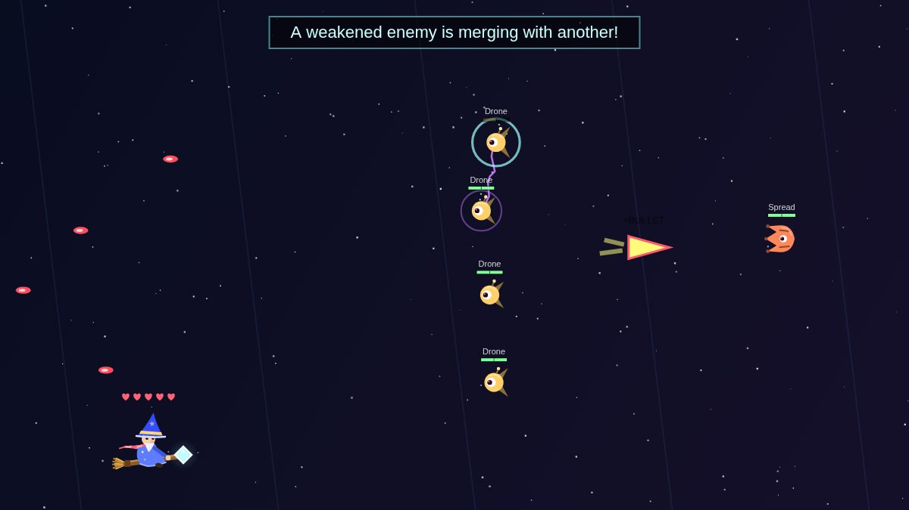
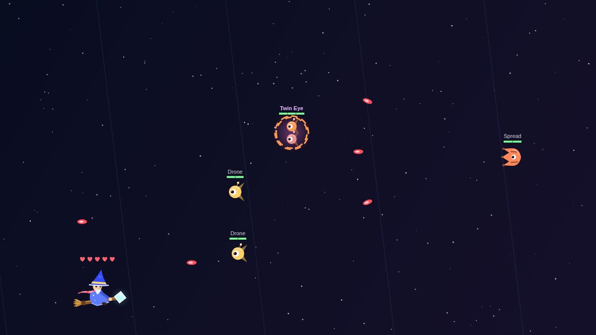
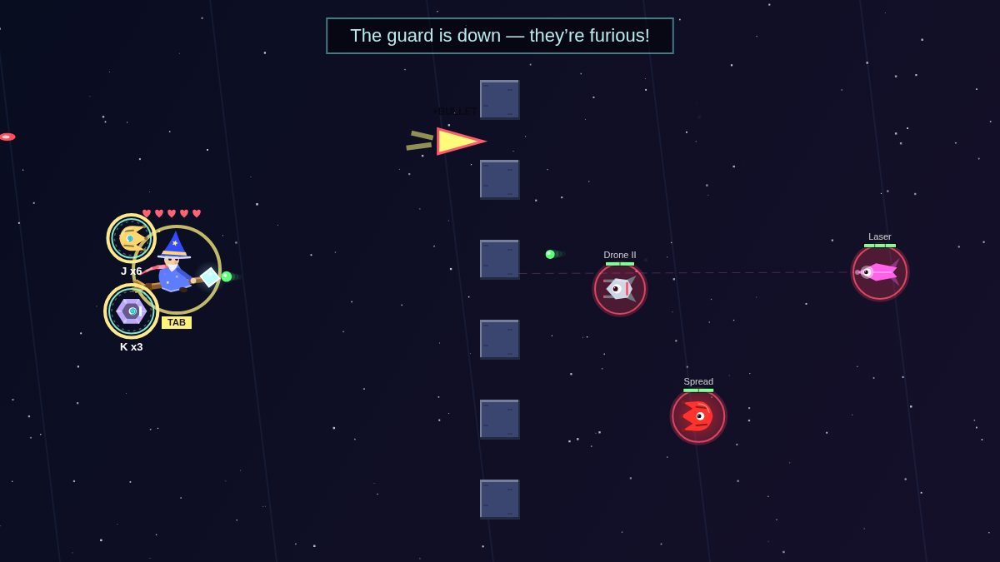
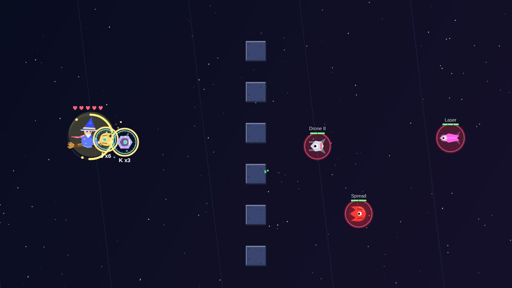
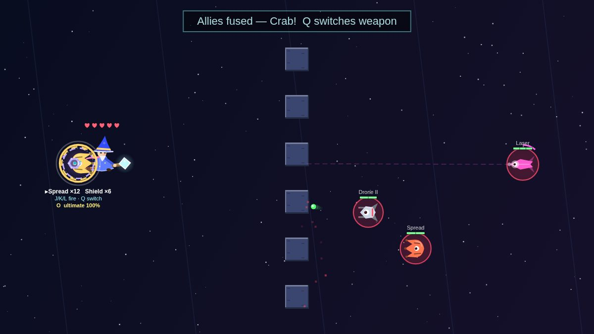
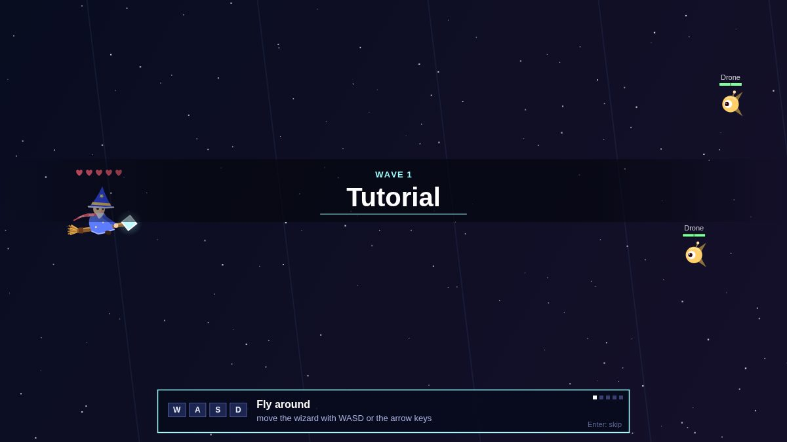
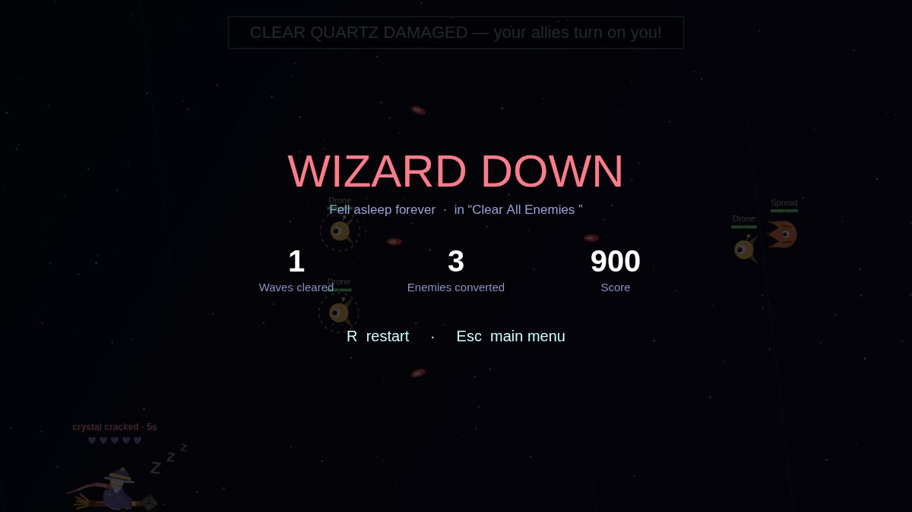
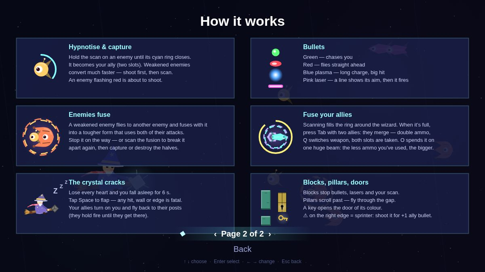

Game design document
Clear Quartz Wizard — Game Design Document
Project: Clear Quartz Wizard (working title)
Genre: Shoot 'em up — a shmup where you cannot shoot
Platform: Web browser (PC prototype)
Engine: HTML5 / JavaScript (Canvas)
Status: Playable prototype — proof of concept
Primary Goal: Hypnotize and control
Contents · 44 sections
- 1. Document Purpose
- 2. Game Overview
- 3. Design Pillars
- 4. Target Audience
- 5. Design Problem
- 6. Inspirations and Positioning
- 7. Core Gameplay Loop
- 8. Core Rules and Objective
- 9. Play Space
- 10. The Wizard
- 11. The Hypnosis Scan
- 12. Allies
- 13. Enemy Types
- 14. Bullets and Telegraphing
- 15. Enemy Behaviour
- 16. Enemy Fusion
- 17. Fusion Meter and Ally Merge
- 18. Ultimate
- 19. Sprinters
- 20. Clear Quartz Crack — the Sleep Phase
- 21. Betrayal
- 22. Recovery
- 23. Emergent Strategy — Recruiting the Same Allies Again
- 24. Environment Objects
- 25. Missions (Prototype)
- 26. Structure and Progression
- 27. Scoring
- 28. Leaderboard
- 29. Controls
- 30. UI and Feedback
- 31. Game Flow
- 32. Tutorial Philosophy
- 33. Visual Direction
- 34. Hidden Narrative
- 35. Ending and Reality Mode
- 36. Audio Direction
- 37. Technical Direction
- 38. Monetization
- 39. Prototype Scope
- 40. Full Game Scope (planned)
- 41. What Clear Quartz Wizard Should Never Become
- 42. Design Philosophy
- 43. Portfolio Value
- 44. Final Design Summary
1. Document Purpose
This document defines the design, gameplay systems, presentation, structure and intended player experience of Clear Quartz Wizard.
Clear Quartz Wizard is a horizontal shoot 'em up in which the player cannot shoot. The player flies a wizard whose crystal can hypnotize enemies. Hypnotized enemies become allies, and allies shoot on the player's command.
The document describes the current playable prototype (built in one week) and marks the decisions that are still open as TBD.
"Clear Quartz Wizard" is the prototype's working title. It comes from the two things in it: a clear quartz and a wizard. The final name is TBD.

2. Game Overview
The player controls a wizard flying on a broom with a quartz crystal on its tip.
Enemies arrive in waves from the right side of the screen. They move in patterns, telegraph their attacks and shoot at the wizard.
The wizard has no weapon of his own. Instead, he can scan an enemy in front of him with the crystal. A successful scan hypnotizes the enemy, and it joins the wizard as an ally. The wizard can hold two allies, and each ally fires only when the player commands it.
The player's job in every mission is to clear the screen by capturing enemies, using captured enemies to weaken or destroy the others, and surviving.
When the wizard loses every heart, the crystal cracks. The wizard falls asleep for a few seconds, his allies turn against him, and he must survive with flappy-bird physics until the crystal repairs itself.
The game is an arcade experience. Its depth comes from choosing which enemies to take, when to take them and how to spend their limited shots.
3. Design Pillars
3.1 Risk and Reward
Every reward must be risked for. Strong enemies can be captured, but the scan only reaches a short distance in front of the wizard and slows him down. To get a powerful ally, the player has to fly close to a dangerous enemy and hold position.
3.2 Control
The fantasy is taking what you want. When the player sees a strong or unique enemy, the game should make them want it, and then let them have it.
3.3 Readability
The game is not a difficulty race. Enemies announce every shot before they fire, bullet types are colour-coded, and the player should always be able to read what is about to happen.
3.4 Coherence
The core mechanics are explained by the same idea: the wizard is under hypnosis, and everything he sees is an illusion. This gives the game a firm foundation and, at the same time, freedom over what can appear in it.
4. Target Audience
Clear Quartz Wizard is intended for everyone.
It should be accessible to all types of players, including players who have never enjoyed shoot 'em ups or who have been pushed away by the difficulty of modern bullet-hell games.
It keeps the movement and the arcade feel of a classic shmup, but the decisions at its core (which enemy to take, when, and how to use it) bring it closer to Pokémon or Pikmin, with shmup logic and movement.
5. Design Problem
The central design question was:
Can a shoot 'em up work if the player cannot shoot?
5.1 Why ask this question?
The shoot 'em up is one of the defining genres of video game history: Space Invaders, Gradius and R-Type all shaped what games became.
Today, the genre is far less prominent than it used to be.
The reason, in this design's view, is that the genre followed one path to its end. Companies competed on a single layer: difficulty. On arcade machines this made sense: a harder game meant more deaths, and more deaths meant more coins. This race produced the bullet-hell sub-genre, and with it the genre became something for a specific, hardcore audience.
There are exceptions that tried something different, such as the Cotton series and Ikaruga, but the majority followed the same path.
Clear Quartz Wizard tries a different path. Its first line was:
"A shmup where you cannot shoot."
5.2 What "cannot shoot" means
"You cannot shoot" is the game's headline, and it is literally true: the wizard has no attack.
Allies can shoot, and the player commands them. But the wizard himself is not doing anything. In the game's lore, the quartz is what controls everything.
5.3 Why hypnosis?
Hypnosis fits the lore of the game, and controlling enemies becomes more interesting the more types of enemies there are. Every type of enemy becomes a different type of tool.
6. Inspirations and Positioning
No single game inspired Clear Quartz Wizard. The idea came out of necessity: from asking why the genre declined and what else it could be.
The genre context that shaped it:
- Space Invaders, Gradius, R-Type — the classics that defined the shmup
- Bullet-hell games — where the difficulty race led
- Cotton series, Ikaruga — exceptions that tried something different
In its decision-making, Clear Quartz Wizard is closer to Pokémon or Pikmin than to a traditional shmup: the player is catching creatures and deciding how to use them, live, while moving with shmup logic and controls.
7. Core Gameplay Loop
High-level loop
- A mission starts and enemies fly in.
- Read the enemies: their type, movement and attacks.
- Choose an enemy you want.
- Fly close and scan it while dodging.
- Capture it as an ally.
- Use your allies' limited shots to weaken or destroy other enemies.
- Capture weakened enemies more easily.
- Fill the fusion meter by scanning, then merge your two allies.
- Use the merged ally — or spend it on the ultimate beam.
- Clear the mission and move to the next one.
- If the crystal cracks, survive the sleep phase and recover.
Low-level loop
At every moment, the player is deciding:
- Which enemy do I want as an ally?
- Is it worth flying this close to take it?
- Should I weaken it first so the scan is faster?
- Should I shoot this enemy or save it for capture?
- Which ally should fire, and is this shot worth the ammo?
- Should I merge my allies now?
- Should I keep firing the merged ally, or save its ammo for a bigger ultimate?
- Is a weakened enemy about to fuse, and can I stop it?
8. Core Rules and Objective
- The wizard cannot attack.
- Holding the scan on an enemy hypnotizes it. When the hypnosis is complete, the enemy becomes an ally.
- The wizard can hold two allies.
- Allies fire only on the player's command and have limited ammo.
- A mission ends when all of its enemies are gone, captured or destroyed.
- The wizard has 5 hearts. Losing all of them cracks the crystal and starts the sleep phase.
- Being hit during the sleep phase ends the run.
9. Play Space
- A single 16:9 screen (1200 × 675 in the prototype)
- Enemies enter from the right edge, or from the top, the bottom or behind the wizard
- The wizard can move anywhere on the screen
- Missions can add objects to the screen: blocks, moving pillars, doors and keys (see section 24)
10. The Wizard
| Property | Value |
|---|---|
| Movement | 8 directions |
| Speed | 360 px/s |
| Speed while scanning | 78% |
| Hearts | 5 |
| Invincibility after a hit | 1.1 s |
There is no HUD panel. The wizard's hearts float above his head and follow him. While the crystal is cracked, the hearts are empty and a countdown appears above them.
The wizard is animated: he bobs while flying, leans into his movement, his hat flops behind him, his scarf and robe flutter, the broom's bristles shake and he blinks. When he scans, he raises his arm and the crystal flares.
11. The Hypnosis Scan
The scan is the game's core mechanic.

11.1 How it works
- Hold Space (or the mouse button) to scan.
- The scan reaches 245 px in front of the wizard and catches enemies within about 46 px (plus the enemy's size) of his height.
- It locks onto the nearest enemy in that area. It cannot see through blocks.
- A cyan ring fills around the target. When the ring closes, the enemy is captured.
- If the scan stops, the enemy's hypnosis slowly fades.
11.2 Why the capture takes time
If the scan were instant, there would be no challenge: no push and pull, no risk, only reward.
If the reward is not risked for, there is no dopamine.
The short reach and the slowdown follow the same idea. To take a strong enemy, the player has to get close to it and stay there.
11.3 Weakened enemies are easier to capture
The lower an enemy's health, the less hypnosis it needs. The effect scales with missing health: an enemy with almost no health left needs up to 65% less hypnosis than at full health.
This connects the two halves of the game: the player uses allies to weaken an enemy, then takes it. It is also natural: someone who is weakened has less resistance.
| Enemy | Time to capture at full HP | At 1 HP |
|---|---|---|
| Drone / Drone II | ≈ 1.3 s | ≈ 0.9 s |
| Spread | ≈ 1.5 s | ≈ 1.0 s |
| Laser | ≈ 1.7 s | ≈ 1.0 s |
| Shield | ≈ 2.1 s | ≈ 1.1 s |
11.4 Scanned enemies panic
An enemy being scanned freezes in place and shakes, but it keeps shooting: faster (×2.6), with shorter warnings and less accurate aim.
This is its nervous system reacting while its brain is not working properly: a survival instinct. As a result, a capture stays dangerous until the ring closes.
12. Allies

12.1 Two ally slots
The wizard holds two allies. Capturing a third replaces the oldest.
One ally was tested and felt too limited.
Three allies made the game too easy: the combined reach of three allies hit every enemy on screen and removed all threat. Each ally also has its own fire button, and a third fire button on top of movement, scanning and dodging felt unnecessary.
Two allies felt balanced, both in shooting range and in the feeling of commanding two shooters.
12.2 Allies fire on command
| Key | Action |
|---|---|
| J | Ally 1 fires |
| K | Ally 2 fires |
| L | Both fire |
| Shift (hold) | Line both allies up at the wizard's height |
Allies do not fire automatically. The game cannot know which enemy the player wants to capture next, and automatic fire could destroy the enemy the player was planning to take.
Lining allies up (Shift) makes every shot aimed instead of wasted, which matters because ammo is limited.
12.3 Limited ammo
Every ally has a limited number of shots, shown as a ring around it and a number below it. When the ammo runs out, the ally is gone.
Limited ammo forces variety during play. Without it, a Laser and a Shield ally together would be unstoppable. The rule is:
The stronger the ally, the less ammo it has.
| Ally | Shot | Ammo | Cooldown |
|---|---|---|---|
| Drone / Drone II | single straight shot | 8 | 0.22 s |
| Spread | three-way shot | 6 | 0.48 s |
| Laser | piercing beam across the screen (stops at blocks), 3 damage | 4 | 0.72 s |
| Shield | 1.2 s protective bubble around the wizard | 3 | 1.2 s |
12.4 Never vulnerable
As long as the wizard can scan an enemy and dodge, nothing in the game should make the player feel vulnerable, even with no allies.
13. Enemy Types
Each type has its own silhouette and colour, and keeps its shape as an ally (with a hypnotized swirl in its eye and ally colours).

| Enemy | Look | HP | Default bullet | One shot about every | Notes |
|---|---|---|---|---|---|
| Drone | round, one big eye, antenna, flapping fins | 2 | Chaser | 2.6 s | the basic scout |
| Drone II | silver angular hull, twin barrels, red stripe | 2 | Straight | 2.5 s | drone variant that does not home |
| Spread | wide manta with three gun prongs | 2 | Straight ×3 (fan) | 2.9 s | fires three bullets at once |
| Laser | long needle with a glowing lens | 3 | Laser | 3.6 s | aims, then fires a beam |
| Shield | armoured hexagon with a visor | 4 + 3 shield | Charge (plasma) | 4.3 s | its shield absorbs ally bullets first |
Shot timings include the charge-up warning and a small random delay, and assume a calm enemy: being scanned, enraged or one of the last enemies left makes them fire faster.
The bullet type is set per enemy, not per type (a Drone can fire straight shots, for example). The type decides how many bullets it fires: the Spread always fires a fan of three.
Touching an enemy costs the wizard a heart and the enemy 1 HP.
14. Bullets and Telegraphing
14.1 Bullet types
| Bullet | Colour | Behaviour |
|---|---|---|
| Chaser | green | homes in on the wizard for about 2.6 s, then flies straight |
| Straight | red | flies straight ahead |
| Charge (plasma) | blue | long charge-up, then a large, slower plasma ball |
| Laser | pink | an aim line shows where it will fire, then a beam |
14.2 Every shot is announced
Before every shot, the enemy turns red and shakes. Then it fires.
- Normal shots: about 0.4 s of warning
- Plasma: about 1.2 s — the enemy shakes harder and a blue ball grows on its nose
- Laser: about 0.75 s, with a dashed aim line from its nose
This is a deliberate answer to bullet hell. The challenge comes from reading the enemies and making decisions, not from memorising walls of bullets.
15. Enemy Behaviour
In a traditional shmup, the most important things are tight controls, small hitboxes and bullet patterns that players learn.
In Clear Quartz Wizard, the most important thing is enemy behaviour. The player is catching enemies and making decisions live, so missions are designed around how enemies behave rather than as waves of targets. Each decision should challenge how the player deals with the next enemy.
15.1 Movement behaviours
Each enemy flies in (from the right, top, bottom or behind) and then follows one of these behaviours:
- Hold its position, floating gently
- Follow a path: up and down, zigzag, wave, circle, figure 8 or swoop
- Track the wizard's height: slides up and down to line up with him (the Laser's default)
- Chase the wizard: drifts towards him
- Protect another enemy: stays between that enemy and the wizard, so it takes the shots and the scan first
- Dive at the wizard: swoops at him, leaves the screen and comes back
15.2 Behaviour changes as the wave thins out
An enemy can switch to a second behaviour when the number of enemies left drops to a set value.
Example from mission 2: four drones zigzag in front of a Spread. When only three enemies are left, the drones stop zigzagging and start protecting the Spread.
15.3 Wave reactions
A whole wave can react to events:
- when a number or percentage of enemies is left
- when one type of enemy is gone
- after a number of seconds
Possible reactions: dive, chase, enrage (fire and move faster), fire faster, move faster, resist hypnosis, start zigzagging, freeze, retreat, or call reinforcements.
Example from mission 6: when the Shield falls, the rest become enraged; when one enemy is left, three drones arrive as reinforcements.
15.4 Crowd balance
In some waves, the fewer enemies are left, the faster each one fires.
16. Enemy Fusion
When an enemy is weakened to half its health or less, it flies to the nearest other enemy (at any health) and the two fuse into a single, bigger enemy.

16.1 Rules
- Only the enemy that seeks the fusion has to be weakened.
- One fusion happens at a time.
- While it flies to its partner, the weakened enemy does not shoot. The player can stop the fusion by scanning or destroying it on the way.
- The fused enemy is larger and tougher, and takes turns using both of its parents' attacks.
- If either parent is a Shield, the fusion has a shield.
- Every pair of types has its own fused form.

16.2 Why enemies fuse
The birds are too scared, so they huddle together, like in cartoons.
16.3 Scanning breaks a fusion
Scanning a fused enemy does not capture it: it breaks the fusion apart into its two original enemies, each with the health it had. The halves cannot fuse again, so the player can then capture or destroy them.
When a fused enemy is scanned, it becomes confused about what is happening and what it was scared of. The hypnosis affects the brain.
16.4 Fusion forms
| Pair | Form |
|---|---|
| Drone + Drone | Twin Eye |
| Drone + Laser | Lancer |
| Drone + Shield | Sentinel |
| Drone + Spread | Hydra |
| Laser + Laser | Crossblade |
| Laser + Shield | Cannon |
| Laser + Spread | Trident |
| Shield + Shield | Fortress |
| Shield + Spread | Crab |
| Spread + Spread | Kraken |
Drone II fuses like a Drone but keeps its own look inside the fusion. The order of the pair does not matter: Drone + Spread is the same as Spread + Drone.

17. Fusion Meter and Ally Merge
Enemy fusion and ally merging are different things. Enemies fuse because they are scared and facing a threat. Allies merge to become stronger: their commands become synchronised.
17.1 The fusion meter
Scanning an enemy slowly fills a ring around the wizard. About 6 seconds of scanning fills it.

17.2 Merging
When the meter is full and the wizard has two allies, pressing Tab starts the merge:
- The merge takes about 2.2 s.
- The wizard slows to 35% speed while the meter drains and the two allies spiral together.
- The result is a single merged ally with its own look for every pair.

17.3 The merged ally
- Each weapon's remaining ammo is doubled. Two fresh allies, a Drone (8) and a Spread (6), become 16 Drone shots and 12 Spread shots.
- Q switches between the two weapons. J, K and L all fire the current weapon.
- When one weapon runs out, it switches to the other. The merged ally lasts until both are empty.
- The merged ally takes both ally slots, so the scan cannot capture anything while it exists.

17.4 Why the merged ally takes both slots
Merging doubles the bullet count. If the player could capture a third enemy while holding a merged ally, it would not make sense to stop them merging that one too. Merging is also the only way to use the ultimate.
17.5 Why merging matters
Merging is the designer's favourite mechanic. Players will wonder what two specific allies will look like together, and that curiosity is fun to discover.
18. Ultimate
With a merged ally, pressing O fires one huge laser beam. The merged ally is used up, and the player has to capture new enemies.

18.1 Power depends on unused ammo
The ultimate's strength depends on how much of the merged ally's ammo is left:
| Ammo left | Damage | Beam height |
|---|---|---|
| Full (never fired) | 30 | 320 px |
| Half | ≈ 17 | ≈ 170 px |
| One shot | 3 | 20 px |
With one shot left, the ultimate is exactly the same as a normal Laser shot.
The beam stops at blocks, and a Shield's shield absorbs part of the damage first.
18.2 Spend or save
The ultimate creates a constant decision: use the merged ally's shots now, or save them for a bigger beam later.
19. Sprinters
A sprinter is a fast yellow arrow that crosses the screen. A warning sign appears on the right edge one second before it arrives.
- Hitting it with an ally shot gives +1 bullet to every Drone and Spread shot (up to +3).
- Touching it costs a heart.
- A mission sets how many sprinters it sends (0–3). They come once all of the mission's enemies have appeared.
Sprinters are a small addition that rewards fast reflexes with something fair. The player cannot know when one is coming, so they cannot prepare for it. Without allies, it cannot be taken. With allies, the player has to aim well, which is why the line-up button (Shift) exists.
20. Clear Quartz Crack — the Sleep Phase
When the wizard loses his last heart, the crystal cracks and he falls asleep.

20.1 Rules
- The sleep phase lasts 6 seconds (adjustable in Options from 3 to 30 s).
- The wizard falls with gravity. Space (or W) makes him flap upward.
- The first 1.2 s protect the wizard from hits.
- During the sleep phase, any hit, any wall, any pillar and the top or bottom of the screen end the run.
- When the timer ends, the crystal repairs itself and the wizard wakes up with 1 s of invincibility.
20.2 Why a sleep phase instead of losing a life
The player should not lose immediately when their health runs out. Old arcade shmups gave players a second chance with a continue system.
The sleep phase is that second chance, tied to the lore. When the quartz cracks, the hypnosis is released for a short time and the wizard falls asleep. Normal controls would not feel natural while sleeping, so the sleep phase uses flappy-bird physics.
20.3 Why 6 seconds
The player usually loses their last heart when the screen is full of enemies. Ten seconds in front of them was too long: survival was nearly impossible whatever the player did.
Six seconds is the balance point: the player feels the consequence of losing, but has a realistic chance of surviving.
21. Betrayal
When the crystal cracks, the wizard's allies turn against him.
- Each ally becomes an enemy again and flies back to the spot where it was captured, then resumes its old behaviour.
- While returning, traitors do not shoot and do not hurt by touch. A dashed pink ring marks them.
- A merged ally splits back into its two enemies.
Originally, traitors attacked immediately from beside the wizard. That was too harsh during the sleep phase.
22. Recovery
After waking up, the wizard's hearts regenerate one at a time: the first after 0.8 s, then one every 2.2 s until all five are back. Regeneration stops if the wizard is hit.
The wizard wakes up with empty hearts. Being hit before the first heart returns cracks the crystal again.
23. Emergent Strategy — Recruiting the Same Allies Again
Playtesting revealed a strategy that was not designed as a separate mechanic.
A player who loves a specific pair of allies can keep it:
- Use the pair until both allies are down to their last shot.
- Let the wizard be hit on purpose and fall asleep.
- The allies betray him and fly back to their posts.
- Survive the sleep phase.
- Scan them again and recruit them with full ammo.
It is very challenging, but it works, and it comes entirely from the interaction between limited ammo, the sleep phase and betrayal.
24. Environment Objects
The prototype is also used to experiment with objects on the screen.
| Object | Behaviour |
|---|---|
| Backdrop | coloured background tiles, no collision |
| Block | stops the wizard, every bullet, lasers and the scan. Enemies fly over it. Hitting one while asleep ends the run |
| Pillar | blocks that scroll left across the screen with a gap to fly through, like a Flappy Bird pipe. Touching one costs a heart; while asleep it ends the run. Pillars block bullets, lasers and the scan |
| Door + key | a door acts as a block until the wizard flies into its key. Each door and its key share a colour |
Pillars were added to test what happens when the player has space to hide behind during play. Doors and keys are an experiment with new objects.
Backdrop tiles, doors and keys exist in the prototype but are not used in the current seven missions.

25. Missions (Prototype)
The prototype's missions are test subjects for the game's mechanics, not a campaign.
Each mission shows its title in large letters when it starts.

| # | Mission | Enemies | What happens |
|---|---|---|---|
| 1 | Tutorial | 2 Drones | One circles, one weaves. When one is left, it starts chasing the wizard |
| 2 | Clear All Enemies | 4 Drones, 1 Spread | The drones zigzag. When three enemies are left, they start protecting the Spread. 1 sprinter |
| 3 | Clear All Enemies II | 3 Drones, 1 Spread (3 HP) | Two drones fly figure 8s and one circles. When two are left, the figure-8 drones protect the Spread |
| 4 | Scan All Enemies Without Shooting Them | 1 fast Drone | A drone moving at three times normal speed. It is too fast to hit, so the player should scan it instead of wasting shots. 1 sprinter |
| 5 | Zigzag Patrol | 4 Drones, 1 Shield | The drones zigzag. When one enemy is left, it dives at the wizard |
| 6 | Last Stand | Shield, 2 Spreads, Laser, Drone II | Behind a slatted wall of blocks. When the Shield falls, the rest are enraged. When one is left, three drones arrive as reinforcements. Crowd balance on. 1 sprinter |
| 7 | Escape | 1 Drone | Five pillars scroll past at high speed and repeat. A single drone tracking the wizard's height arrives after 4 s. The goal is to get through the pillars and scan it |
Some missions finish in seconds, others take minutes.
Open questions
- Mission titles currently describe objectives, but every mission ends when its enemies are gone. Whether objectives become real win and fail conditions is TBD.
- Mission 7's execution needs more work.
26. Structure and Progression
26.1 Prototype
- Missions play in order. Each starts a few seconds after the previous one is cleared.
- After the last mission, the game loops back to the first, and enemies fire 15% faster on every loop.
- Difficulty follows one curve; there are no difficulty settings.
26.2 Full game (planned)
- A full campaign
- Bosses
- Leaderboards
- A Reality mode, unlocked by finishing the game (see section 35)
27. Scoring
| Action | Score |
|---|---|
| Capture an enemy | +250 |
| Destroy an enemy | +100 |
| Destroy a fused enemy | +400 |
| Clear a mission | +150 |
| Destroy a sprinter | +250 |
| Take a key | +50 |
| Ally bullet hit | +35 |
| Ally laser or ultimate hit | +45 |
| Hit on a Shield's shield | +20 |
28. Leaderboard
Leaderboards are planned for the full game. They turn the score into a competitive goal.
29. Controls
The prototype is played with the keyboard. Gamepad support is planned.
| Key | Action |
|---|---|
| W A S D / arrows | Fly |
| Space / mouse (hold) | Scan |
| J · K · L | Fire ally 1 · ally 2 · both |
| Shift (hold) | Line allies up |
| Tab | Merge allies (meter full) |
| Q | Switch the merged ally's weapon |
| O | Ultimate (uses up the merged ally) |
| Space / W (asleep) | Flap |
| Esc / P | Pause |
| R | Restart after game over |
| Enter | Skip a tutorial tip |
30. UI and Feedback
- Hearts above the wizard's head; empty, with a countdown, while the crystal is cracked; the next heart pulses green while regenerating
- Mission title card when a mission starts
- Message banner at the top for events ("Captured Spread ally", "The guard is down — they're furious!")
- Ammo rings and counters around each ally; the merged ally also shows its ultimate power as a percentage
- Enemy health bars with one segment per hit point; the bar flashes when an enemy is weak enough to fuse
- Hypnosis ring around the enemy being scanned
- Fusion meter ring around the wizard, with a TAB prompt when merging is possible
- Charge-up warnings: red shake, plasma ball, laser aim line
- Game over screen: waves cleared, enemies converted, score, what ended the run and in which mission

31. Game Flow
Main menu
- Start game
- Tutorial
- Choose mission
- How to play (two pages: controls, and an illustrated "How it works")
- Options
Options
- Cracked crystal duration (3–30 s)
- Tutorial tips on/off
- Weakened enemies fuse on/off
- Show all tutorial tips again
Pause menu
- Resume
- Restart mission
- How to play
- Options
- Main menu
Game over
R restarts the run; Esc returns to the main menu.

32. Tutorial Philosophy
The tutorial teaches through play, one step at a time. Each step completes when the player does it:
- Fly around.
- Hypnotise with your crystal.
- Capture an ally.
- Command your allies.
- Line them up.
After that, each advanced system is introduced with a one-time tip the first time it appears: weakened enemies, the red charge-up, bullet colours, the full fusion meter, the merged ally, "no free slot", enemy fusion, the cracked crystal, blocks, pillars, keys and sprinters.
33. Visual Direction
The prototype uses clean vector shapes on a dark starfield:
- Every enemy type has a distinct silhouette and colour.
- Allies keep their silhouette but switch to ally colours and a hypnotised swirl eye.
- Fused forms combine both parents in a pose unique to the pair, inside a two-colour energy ring.
- The wizard is the most animated element on screen.
Final art direction: TBD.
34. Hidden Narrative
The game has a hidden story, revealed gradually, like the medical theme in FiveTen.
34.1 The lore
The wizard was searching for a quartz that grants all wishes. He had read about it in his magic books.
He found it in a cave, stuck to a stick. He was happy that he had finally found it, but when he came closer, the quartz activated, scanned him and hypnotised him.
That stick is the broom he rides, and the quartz sits on its tip.
The wizard has been under hypnosis ever since. The quartz is the real player. Every enemy is an illusion: in reality, they are birds throwing rocks at him, because they are scared of what this thing is.
34.2 How the mechanics fit the lore
| In the game | In reality |
|---|---|
| Enemies | scared birds |
| Bullets | rocks the birds throw |
| Scanning an enemy | the quartz hypnotises the bird too |
| The crystal cracks and the wizard sleeps | the hypnosis is released for a moment |
| Enemies fusing | scared birds huddling together |
| A scanned fusion breaking apart | confused birds forgetting what scared them |
| Allies merging | hypnotised birds whose commands are synchronised |
34.3 Why hide it
The player should eventually ask: "Why hypnosis?" From that question, theories start forming.
Betrayal is not explained during play. If it is explained, it will be part of the final realisation: the player notices, forms a hypothesis and gets the confirmation at the end.
34.4 Why the illusion matters to design
Because every enemy is an illusion, enemies can be anything. A dragon could appear, and it would make sense: the wizard read books about dragons. The lore gives the game freedom while keeping it coherent.
35. Ending and Reality Mode
At the end of the game, the quartz breaks and the wizard sees reality.
Finishing the game unlocks a new mode, Reality, in which the player sees what was really happening all along.
36. Audio Direction
TBD. The prototype has no audio yet.
37. Technical Direction
The prototype is built in HTML5 and JavaScript on a single canvas, and runs in a web browser.
HTML was chosen because it allows fast prototyping: ideas are quick to experiment with and play, which suits a project whose purpose is testing mechanics.
The prototype runs as a single self-contained HTML file.
38. Monetization
There is no monetization plan. If someone is interested in the game commercially, that option is open for discussion.
39. Prototype Scope
The current prototype contains:
- the wizard, movement and animation
- the hypnosis scan
- five enemy types and four bullet types
- two-slot allies with commanded fire and limited ammo
- enemy behaviours, behaviour changes and wave reactions
- enemy fusion (ten forms) and fusion breaking
- the fusion meter, ally merging and the ultimate
- sprinters
- the sleep phase, betrayal and recovery
- blocks, pillars, doors and keys
- seven missions
- main menu, pause menu, options, how to play, guided tutorial and tips
- scoring and game over statistics
40. Full Game Scope (planned)
- Campaign
- Bosses
- Leaderboards
- Reality mode and the ending
- Gamepad support
- Final art direction (TBD)
- Audio (TBD)
- Mission objectives as real win/fail conditions (TBD)
- Final name (TBD)
41. What Clear Quartz Wizard Should Never Become
Status: Incomplete — to be written as development continues.
Topics to consider:
- the difficulty race the genre is known for
- mechanics that cannot be explained by the hypnosis
- screens where the player cannot read what is about to happen
- systems that make the player feel vulnerable while they can still scan and dodge
42. Design Philosophy
Clear Quartz Wizard is built on one constraint: the player cannot shoot.
Everything else follows from it. Because the player cannot destroy enemies directly, enemies become resources. Because enemies are resources, their behaviour matters more than their bullet patterns. And because every enemy is an illusion, any behaviour can exist and still make sense.
The game should be:
- immediately understandable
- readable at every moment
- risky to play greedily, and rewarding when it works
- full of live decisions rather than memorised patterns
- coherent with its lore
43. Portfolio Value
Clear Quartz Wizard demonstrates:
- turning a single phrase into a playable prototype in one week
- designing a core mechanic that inverts a genre convention
- building a lore that justifies the core mechanics
- risk-and-reward design
- designing enemy behaviour as the centre of level design
- balancing through self-playtesting (ally count, sleep-phase length, betrayal)
- designing feedback and readability
- designing a tutorial and onboarding
- recognising an emergent player strategy
44. Final Design Summary
Clear Quartz Wizard asks a simple question:
Can a shoot 'em up work if the player cannot shoot?
This prototype is its early answer: a game where enemies are not only obstacles but things to take, use and combine, held together by a story in which the player was never really the one in control.
The core activity is:
Spot → approach → scan → control → merge → unleash.